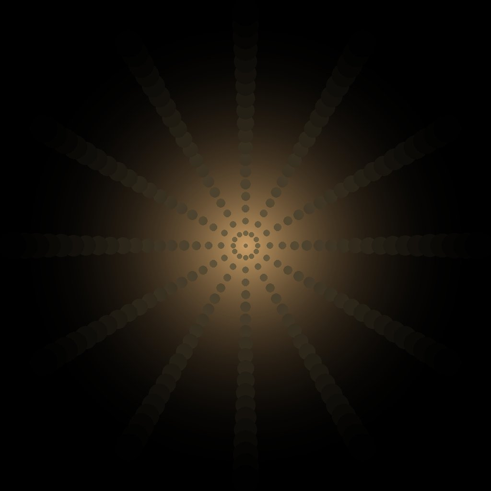
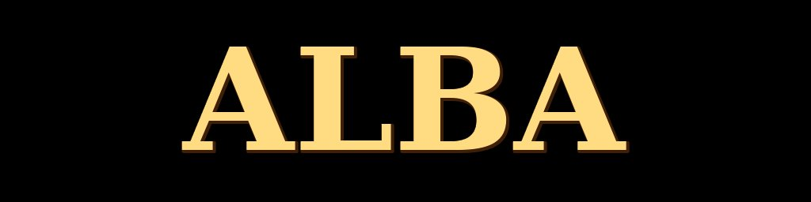
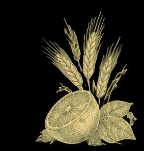
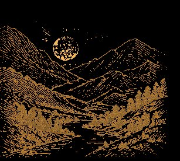
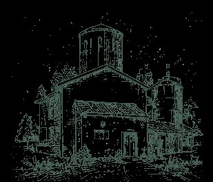

01
El Trigo
Cosechado a finales de julio en los campos de Castilla. Su grano dorado aporta cuerpo y la suavidad que define a ALBA.

Cervecería de Zarracín

Trigo con Naranja · 5.8%

Apunta la cámara hacia la lata de ALBA
y descubre el valle donde nace.
Requires camera access
Toca para descubrir el valle
Tres ingredientes
01
Cosechado a finales de julio en los campos de Castilla. Su grano dorado aporta cuerpo y la suavidad que define a ALBA.

02
Naranjas del valle, recogidas al amanecer. La piel se macera en frío para conservar su aroma cítrico.

03
Una pequeña fábrica de piedra a la sombra de las montañas. Aquí se fermenta lentamente, sin prisa, como mandan los oficios viejos.

Esta experiencia necesita acceso a la cámara para funcionar. Por favor habilita el permiso en los ajustes de tu navegador y recarga la página.